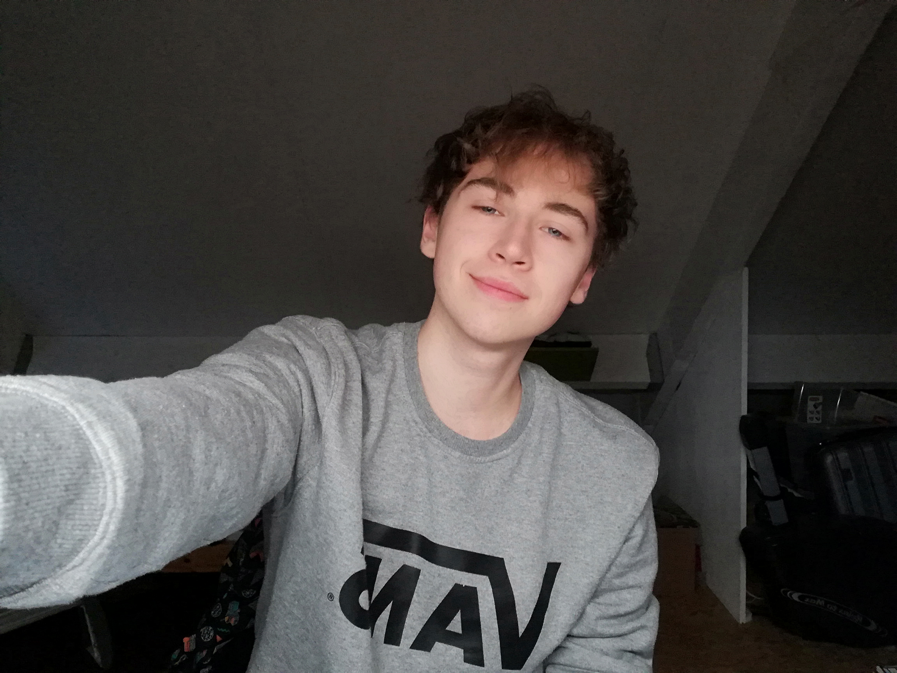

Over Mij

Mijn naam is Ezra Bruijnzeel, ik ben geboren op 25 December 1999 en ik woon in Sint-maartensdijk. Ik heb voor de opleiding HBO-ICT gekozen omdat ik beschik over een aantal kwaliteiten die uitstekend passen in een functie binnen deze sector.
Een aantal kwaliteiten zijn bijvoorbeeld:
- Teamspeler, ik werk graag met anderen en neem feedback ten harte.
- Behulpzaamheid, ik ben altijd bereid om mijn collega's te helpen.
- Flexibel zijn in mijn werk en werktijden, ik vind het geweldig om nieuwe dingen te leren dus aan uiteenlopende projecten werken is voor mij geen probleem.
- Goed aanpassings vermogen, ik ben goed in het lezen van situaties en pas me aan wanneer dat nodig is.
- Vasthoudenheid, wanneer ik met een project bezig ben houd ik vol, zelfs als ik weerstand ondervind.
- Ruimdenkend, als ik tegen een probleem aanloop zoek ik naar een oplossing, ook als deze niet voor de hand ligt.
Als u nog meer informatie over waarom ik voor deze opleiding heb gekozen en tevens een meer uitgebreide uitleg van mijn kwaliteiten wilt, kunt u verder lezen op de hoofdpagina.